Guia para os Itens Especiais
Uma das marcas registradas de Dynasty Warriors 5 é a obtenção de itens raros por meio do cumprimento de condições especiais em determinadas fases, independentemente do nível de dificuldade escolhido.
Entre esses itens estão as selas e arreios, que permitem iniciar as batalhas montado em cavalarias especiais, e os orbes elementares, que acrescentam propriedades únicas e efeitos adicionais aos ataques de carga dos personagens.
Esta seção apresenta uma explicação detalhada sobre as funções de cada item e orienta onde encontrá-los ao longo do jogo.
Itens Especiais
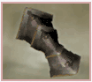
Arm Guards
Acessório
Efeito: Não sofre danos durante ataques carregado.
Etapa: Si Shui Gate (Dong Zhuo’s Force)
Requisitos: Derrote Sun Jian antes que Cao Cao chegue com seus reforços.
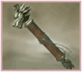
Art of War
Acessório
Efeito: Itens que aumentam a habilidade duram mais.
Etapa: Battle of Chi Bi (Cao Cao’s Force)
Requisitos: Derrote Zhuge Liang logo após sua unidade começar a recuar.
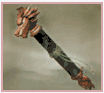
Bodyguard Manual
Acessório
Efeito: Seu guarda-costas fica mais forte.
Etapa: Guan Yu’s Escape (Guan Yu’s Force)
Requisitos: Derrote Zhang Liao e Xu Huang.
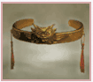
Demon Band
Acessório
Efeito: Aumenta a duração do Musou Rage.
Etapa: Battle of Xi Liang (Yellow Turban Forces)
Requisitos: Derrote Ma Chao três minutos após sua aparição.
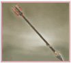
Fire Arrows
Acessório
Efeito: Suas flechas se tornam flechas de fogo.
Etapa: Battle of Ji Province (Yuan Shao’s Force)
Requisitos: Depois de derrotar Zhang Bao e Zhang Liang, derrote Pei Yuanshao.
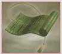
Green Scroll
Acessório
Efeito: O ataque aumenta e a defesa diminui.
Etapa: Battle of Jie Ting (Shu Forces)
Requisitos: Derrote Sima Yi em três minutos após derrotar Xu Zhu.
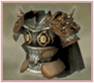
Musou Armor
Acessório
Efeito: Não sofre atordoamento por ataques de arco.
Etapa: Conquest of Nan Zhong (Nanman Forces)
Requisitos: Derrote todos os sete Juggernauts sete minutos após a primeira destruição.
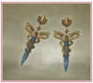
Serpent Earrings
Acessório
Efeito: Ataque Permanente +2 para cada 100 K.Os.
Etapa: Battle of He Fei (Wu Forces)
Requisitos: Derrote Xu Huang e Xiahou Dun dentro de um minuto após sua aparição.
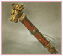
Survival Guide
Acessório
Efeito: Aumenta o ataque em 2x após ser ficar com a saúde vermelha.
Etapa: Battle of Hu Lao Gate (Dong Zhuo’s Force)
Requisitos: Derrote Cao Cao, Liu Bei, Sun Jian e Gongsun Zan.
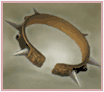
Tiger Collar
Acessório
Efeito: Comece o estágio com um tigre como guarda-costas.
Etapa: Struggle for Nan Zhong (Nanman Forces)
Requisitos: Derrote três unidades Beastmaster no primeiro minuto da fase.
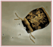
Tribal Remedy
Acessório
Efeito: Recuperação da saúde a cada 100 K.Os.
Etapa: Battle of He Fei Castle (Wei Forces)
Requisitos: Derrote Jiang Qin, Pan Zhang e Sun Shao, junto com os dois Rams.
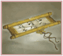
Way of Musou
Acessório
Efeito: Uso permanente de True Musou.
Etapa: Battle of Mt. Ding Jun (Shu Forces)
Requisitos: Derrote Xiahou Yuan antes da chegada de Cao Cao.
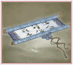
Way of Musou
Acessório
Efeito: Aumenta o alcance de ataque
Etapa: Battle of He Fei Castle (Wu Forces)
Requisitos: Derrote Cao Ren nos primeiros cinco minutos da etapa.
Montarias
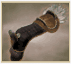
Elephant Harness
Montaria
Efeito: Comece o estágio montado em um elefante.
Etapa: Battle of Nan Zhong (Nanman Forces)
Requisitos: Resgate Wu Tugu, o Rei Duosi e o Rei Mulu sem permitir que nenhum oficial inimigo entre em seu acampamento principal.
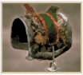
Hex Mark Harness
Montaria
Efeito: Comece o estágio montado em Hex Mark (Aumenta a sorte).
Etapa: Battle of Cheng Du (Liu Bei’s Force)
Requisitos: Derrote Zhang Ren um minuto após sua emboscada e salve Pang Tong.
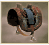
Red Hare Harness
Montaria
Efeito: Comece o estágio montado em Red Hare (Cavalo mais rápido).
Etapa: Battle of Chang Shan (Yuan Shao’s Force)
Requisitos: Derrote Liu Bei, Guan Yu e Zhang Fei em um minuto.
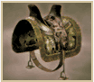
Shadow Harness
Montaria
Efeito: Comece o estágio montado em Shadow Runner (Não pode ser derrubado do cavalo).
Etapa: Battle of Liang Province (Allied Forces)
Requisitos: Derrote Zhang Ji e Hu Zhen dentro de 45 segundos após sua chegada. Isso pode parecer muito difícil, mas é bem fácil. Apenas certifique-se de que seu oficial consiga matar rapidamente e use ao Red Hare para passar de um para o outro (se você usar outro cavalo, terá que ser ainda mais ligeiro). Limpe os fortes nordeste e sudeste antes que Dong Zhuo chegue e espere em um deles. Ele dirá: “Você achou que eu viria sem um plano?” e ambos os oficiais chegarão. Mate o primeiro e corra em direção ao segundo, que se moverá em direção ao centro do mapa.
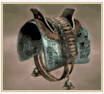
Storm Harness
Montaria
Efeito: Comece o estágio montado em Storm Runner (Aumenta o ganho de XP em 50%)
Etapa: Battle of Guan Du (Cao Cao’s Force)
Requisitos: Derrote Yan Liang e Wen Chou nos primeiros cinco minutos da etapa.
Orbes Elementais
Fire Orb
Orbe Elemental
Efeito: Adiciona dano de fogo aos ataques carregado.
Etapa: Battle of Si Shui Gate (Allied Forces)
Requisitos: Derrote 200 inimigos em dois minutos.
Ice Orb
Orbe Elemental
Efeito: Ataques carregado congelam temporariamente os inimigos.
Etapa: Battle of Guan Du (Yuan Shao’s Force)
Requisitos: Derrote Cao Pi nos primeiros quatro minutos da etapa.
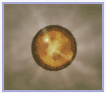
Light Orb
Orbe Elemental
Efeito: Os ataques rompem a guarda inimiga.
Etapa: Battle of Wu Zhang Plains (Shu Forces)
Requisitos: Derrote Cao Ren, Zhen Ji e Xu Zhu nos primeiros cinco minutos.
Shadow Orb
Orbe Elemental
Efeito: Os inimigos podem ser mortos em um único ataque (Utiliza medidor de musou)
Etapa: Battle of Wu Zhang Plains (Wei Forces)
Requisitos: Derrote Jiang Wei enquanto Zhuge Liang ainda estiver vivo.
Créditos reservados a Kongming's Archives